Il disegno come giudizio:
rappresentare per verificare
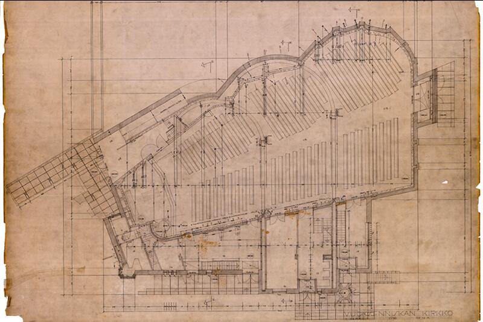

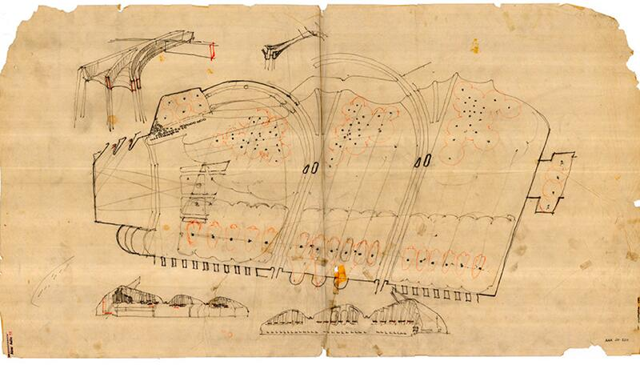
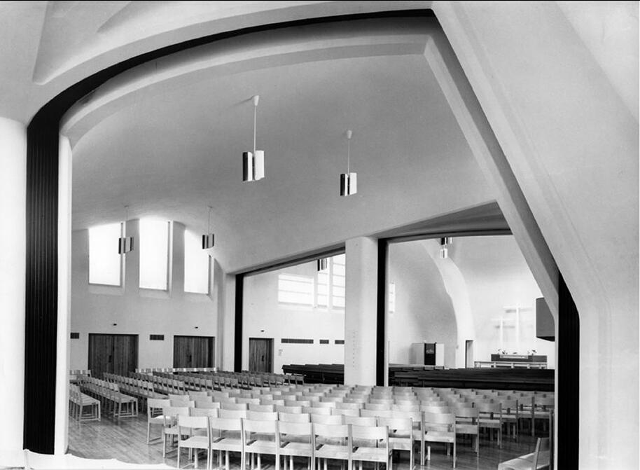
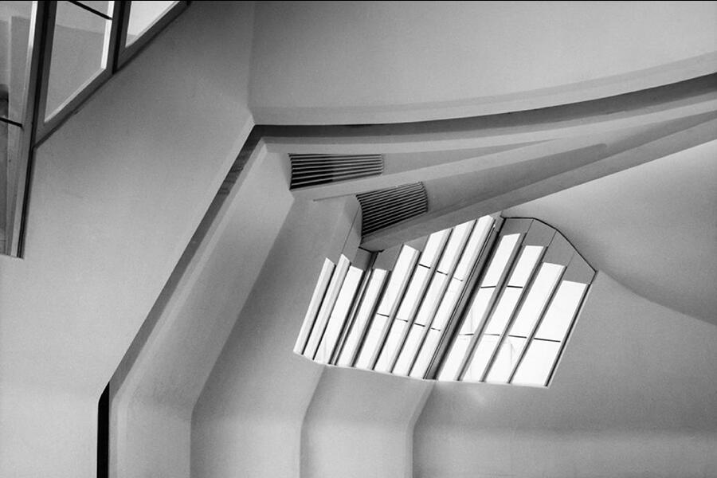
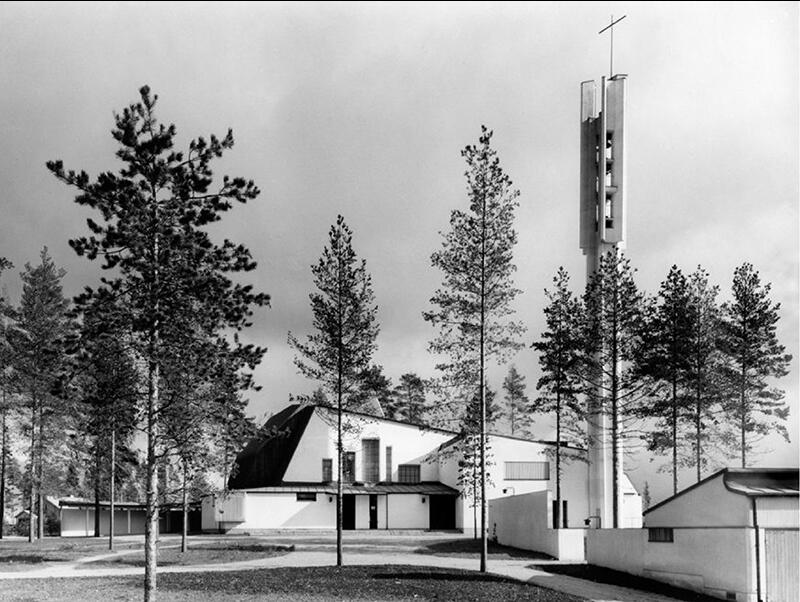
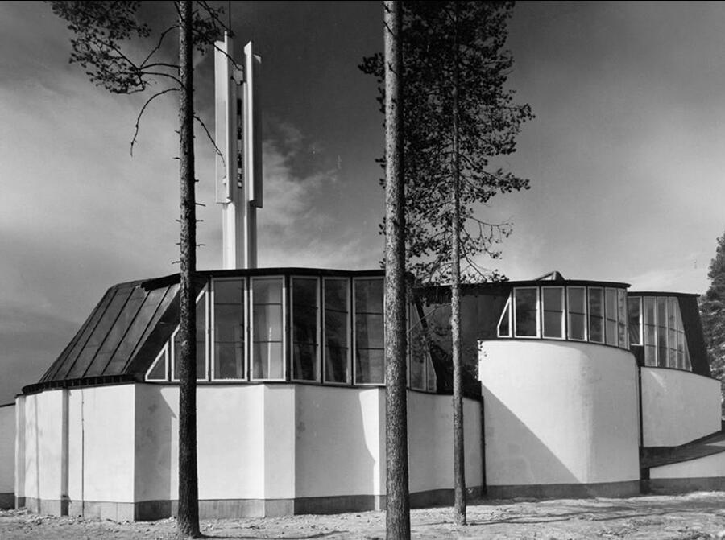
Negli schizzi per la Chiesa di Vuoksenniska, Aalto mostra in modo esemplare cosa significhi usare la rappresentazione come strumento di verifica e non come illustrazione. Ogni disegno è una prova: test di direzione, correzione dei volumi, verifica della luce radente sulla navata, tentativi successivi di ordinare un sistema complesso fatto di vuoti, piegature di copertura, differenze di quota e zone di concentrazione luminosa.
La forma non esiste in anticipo: emerge come esito di una serie di controlli, di aggiustamenti, di interrogazioni grafiche. Aalto utilizza schizzi sovrapposti, piante deformate, sezioni veloci e annotazioni intuitive per mettere alla prova la logica interna dello spazio. Ciò che cerca non è un’immagine compiuta, ma una struttura coerente, una sintassi capace di tenere insieme luce, materia e comportamento della navata.
In questo processo, il disegno diventa un laboratorio critico. La luce viene spostata e testata come fosse un materiale; le coperture vengono piegate e rialzate per verificare se il campo respira; la posizione degli ingressi è corretta più volte per controllare come la sequenza spaziale costruisca un climax percettivo. La rappresentazione non segue il progetto: lo fa nascere.
Gli schizzi di Aalto sono così uno dei migliori esempi del principio centrale della Lezione 8: la forma si costruisce attraverso le verifiche, non dopo. La sintassi dello spazio non è un sistema astratto, ma il risultato di un processo di giudizio continuo, in cui ogni segno grafico misura la necessità della forma e la sua capacità di diventare architettura.

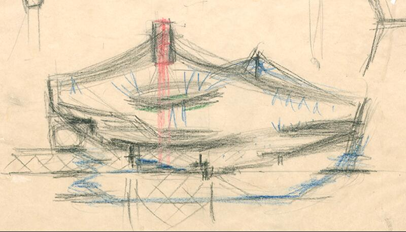
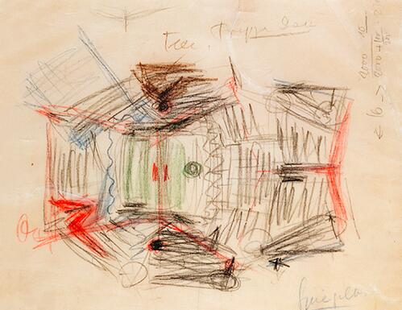
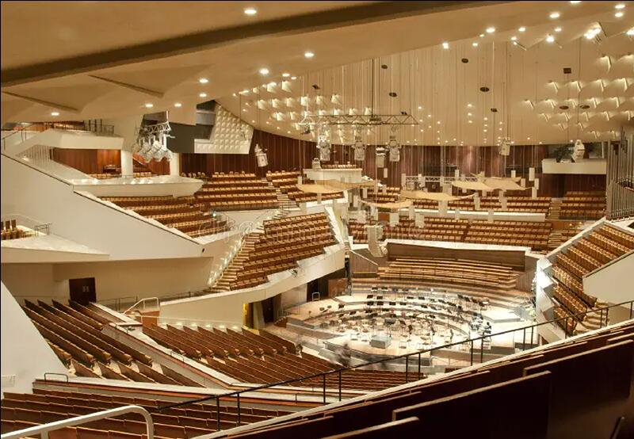
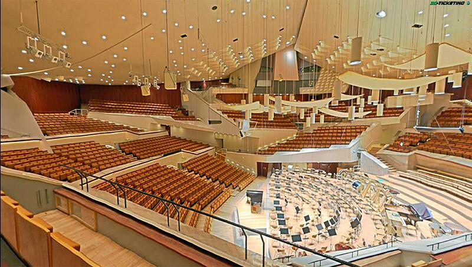
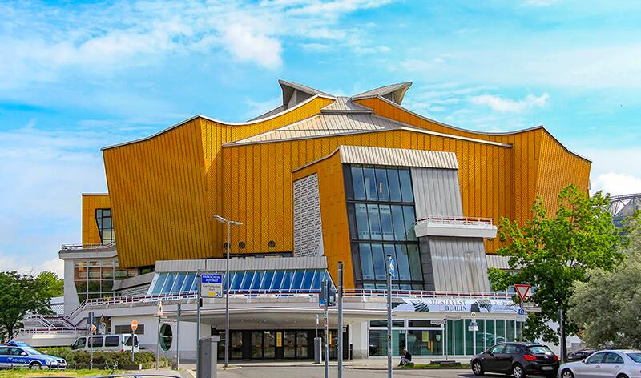
Gli schizzi e i diagrammi della Philharmonie di Berlino sono uno dei casi più emblematici di come la rappresentazione diventi lo strumento attraverso cui la forma prende corpo. Scharoun non disegna per immaginare un volume, ma per verificare una sintassi spaziale: capire come si genera un “campo” attorno alla musica, come il pubblico diventi morfologia, come il movimento produca la forma.
Nei primi schizzi, la sala non appare come un oggetto chiuso, ma come una costellazione di direzioni che convergono verso il podio centrale. La disposizione dei terrazzamenti nasce da una serie di diagrammi radiali e vettoriali: linee che testano la visibilità, gradienti che verificano la distanza acustica, pendenze che correggono la percezione del corpo nello spazio. È un pensiero relazionale, non figurativo.
La sezione, continuamente ridisegnata, diventa il vero luogo della verifica: Scharoun controlla come la copertura si pieghi per distribuire la luce, come le altezze varino per accompagnare l’intensità sonora, come il pubblico si organizzi in una struttura paesaggistica che avvolge l’orchestra. Ogni tratto di matita modifica il comportamento del campo, conferma o smentisce un principio, mette alla prova la logica interna della sala.
La Philharmonie di Berlino non emerge da un’immagine iconica, ma dalla coerenza progressiva di una serie di verifiche: la forma nasce perché le relazioni tengono, perché la sintassi funziona. Gli schizzi mostrano che l’architettura non è la ricerca di un “aspetto”, ma la costruzione di un sistema di reciproche dipendenze: luce, acustica, geometria, orientamento del corpo.

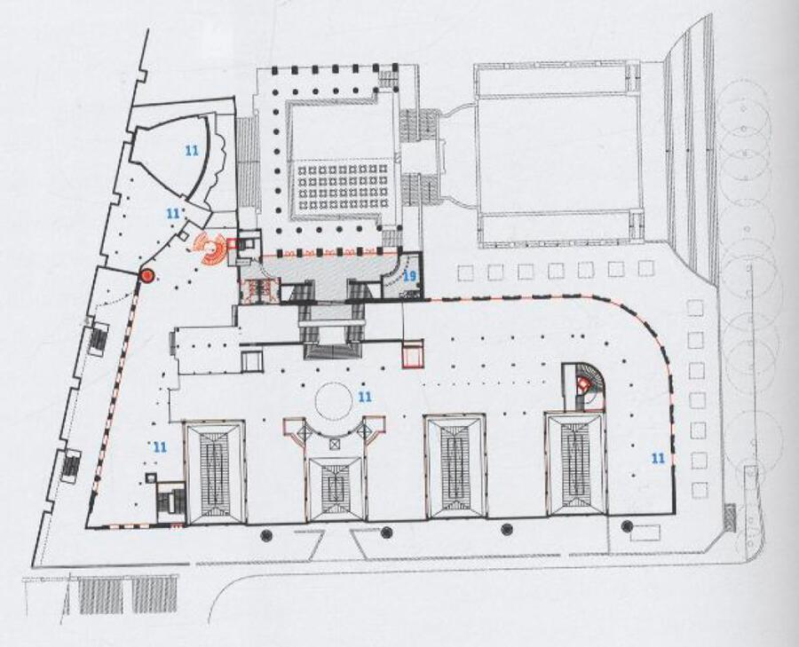
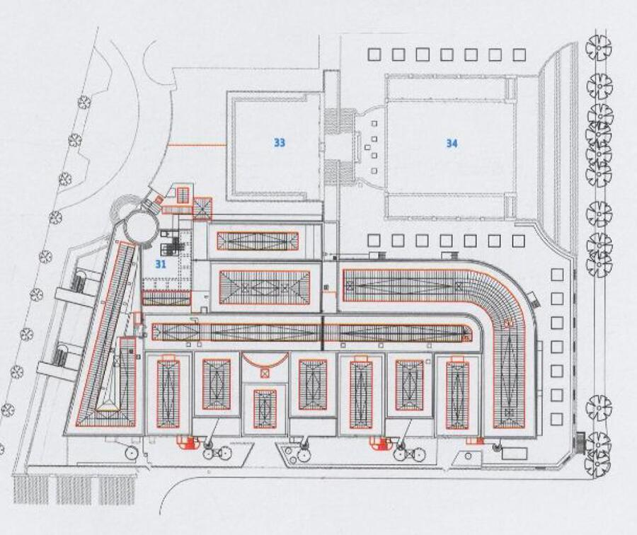
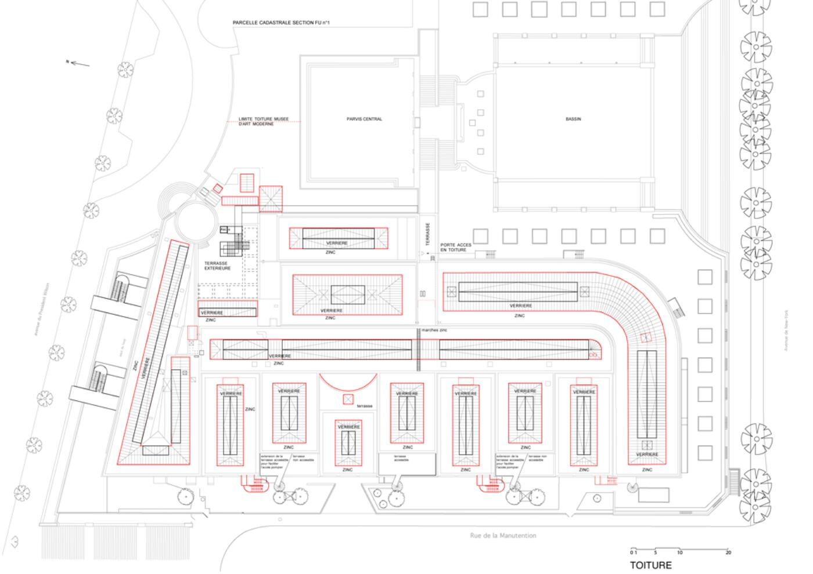
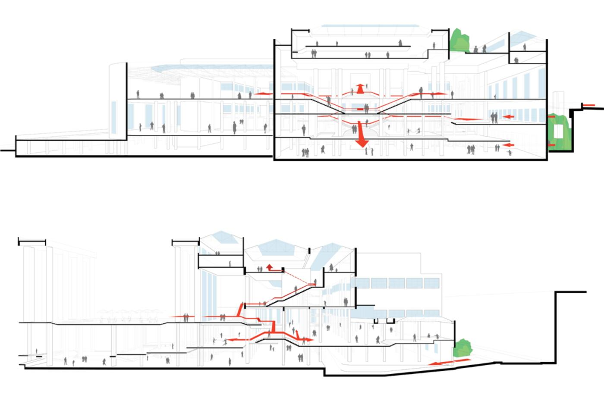
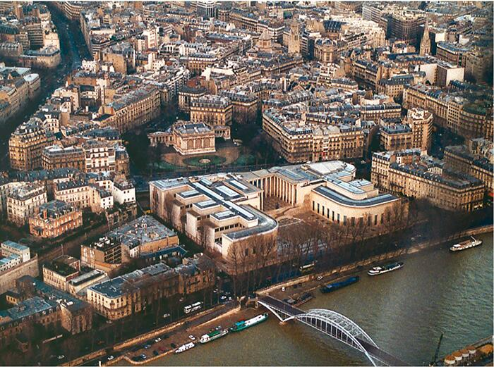
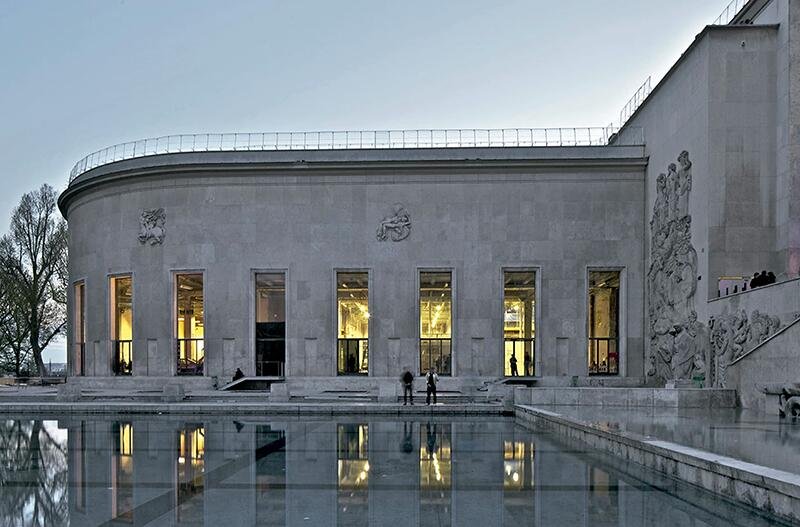
Il Palais de Tokyo – fase 2 di Lacaton & Vassal è uno dei casi più chiari in cui il disegno diventa un vero e proprio strumento di verifica critica, più che di definizione formale. L’intervento nasce da un principio radicale: non aggiungere, ma rivelare. Per farlo, gli architetti adottano un metodo che passa interamente attraverso la rappresentazione analitica del costruito.
I diagrammi di trasformazione non sono schemi illustrativi: sono dispositivi cognitivi che scompongono l’edificio nelle sue potenzialità operative. Attraverso sovrapposizioni, cancellazioni, gradienti, aperture e linee di forza, essi interrogano il manufatto esistente: dove la luce può entrare, dove il vuoto può estendersi, quali parti possono diventare permeabili, quali strutture nascondono risorse spaziali inutilizzate. È il disegno che decide il progetto, non il contrario.
La rappresentazione assume qui un ruolo eminentemente sintattico: verifica il comportamento dello spazio, esplora scenari, mette alla prova gradi diversi di trasformazione e liberazione. Quei diagrammi non propongono una forma nuova, ma rivelano come l’edificio possa funzionare diversamente, come il campo spaziale possa essere riattivato attraverso minime operazioni di apertura, demolizione selettiva o chiarificazione.
Lacaton & Vassal dimostrano che il progetto non nasce aggiungendo complessità, ma togliendo rumore: la forma emerge dall’evidenza delle relazioni interne, non da un gesto autoriale. Per questo il disegno è decisivo: non rappresenta l’edificio futuro, ma costruisce la logica della sua trasformazione. In Palais de Tokyo, la rappresentazione diventa il luogo in cui lo spazio si lascia leggere e, leggendo, si lascia reinventare.